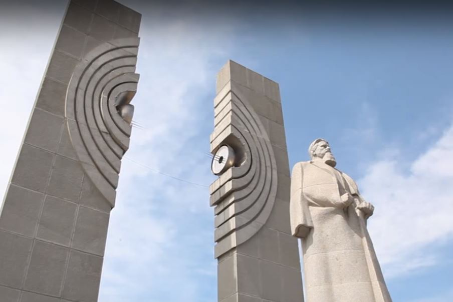

1. Текст
Выдающийся физик, академик Игорь Васильевич Курчатов занимает особое место в науке ХХ века. Он сыграл ключевую роль в становлении и развитии атомных исследований в СССР.
Курчатов одним из первых в России приступил к изучению физики атомного ядра, начал работать над созданием атомного оружия. В это время в Москве был организован Институт атомной энергии, которому позже присвоили имя учёного. Циклотрон, сооружённый здесь под руководством И. В. Курчатов, дал возможность сделать ядерную реакцию управляемой и перейти к разработке ядерного оружия. Советская атомная бомба появилась в 1949 году.
Курчатов, воочию увидевший разрушительную мощь нового оружия, вместе со своими коллегами активно призывал к его запрету, обращаясь к правительствам всех стран мира.
Учёный был твёрдо убеждён: атомную энергию следует использовать только в мирных целях. С именем Игоря Васильевича связано строительство первых в мире атомной электростанции и атомного ледокола. Заслуга Курчатова в том, что он развивал применение атомной энергии в Советском Союзе по двум направлениям, считая необходимым уделять внимание не только военному, но мирному применению атома.
2. Задание к тексту
Пересказ на итоговом собеседовании должен быть подробным.
Цитату нужно включать в пересказ по смыслу - в подходящее место.
Слова И. В. Курчатова: "Атом должен быть рабочим, а не солдатом".
Использовать можно любой способ цитирования:
вводную конструкцию: словосочетание или предложение, например:
По словам Курчатова, "атом должен быть рабочим, а не солдатом";
Как говорил Курчатов, "атом должен быть рабочим, а не солдатом";
косвенную речь: сложноподчинённое предложение, например:
Курчатов говорил, что "атом должен быть рабочим, а не солдатом";;
прямую речь, например:
Курчатов говорил: "Атом должен быть рабочим, а не солдатом"
3.Опишите фото «Памятник И. В. Курчатову в Челябинске»

Вопросы при описании памятника:Памятник знаменитому физику-ядерщику Игорю Васильевичу Курчатову был открыт в 1986 году к 250-летию Челябинска на вновь созданной площади Науки около зданий Челябинского политехнического института.. С 2014 года памятник включен в единый реестр объектов культурного наследия Российской., в состав которой входят два пилона и находящаяся между ними статуя Курчатова на постаменте.
1. Что символизируют полусферы на пилонах (расщепленный атом)?
2. Почему памятник представляет собой сложную архитектурно-скульптурную композицию?